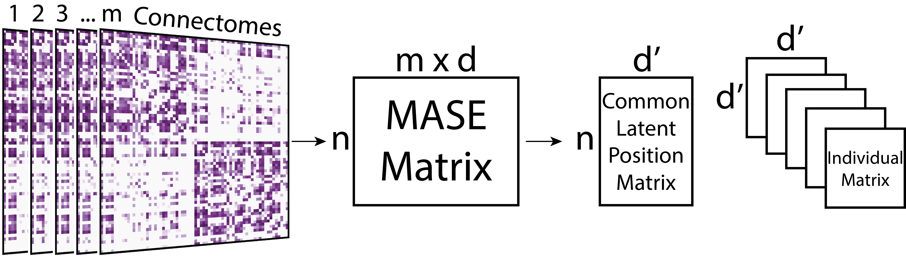

name:opening ## Statistical Methods for Population of Connectomes Jaewon Chung | Johns Hopkins University - talk - [bit.ly/graphstat](https://bit.ly/graphstat) - repo - [github.com/neurodata/ohbm](https://github.com/neurodata/ohbm) <img src="images/neurodata_purple.png" style="height:250px; float:right;"/> <br><br><br><br><br><br><br><br><br> <!-- <img src="images/funding/jhu_bme_blue.png" STYLE="HEIGHT:95px;"/> --> .foot[[j1c@jhu.edu](mailto:j1c@jhu.edu) | <http://neurodata.io/talks/> | [@neuro_data](https://twitter.com/neuro_data)] --- ### Brains as connectomes 1. Vertices = region of interest 2. Edges = connectivity measure (e.g. # of fibers, correlation) connectomes = graphs = adjacency matrix .footnote[Talk Link = [bit.ly/graphstat](https://bit.ly/graphstat)] --- ### Statistical inference on graphs If edges in a graph are random, 1. model the randomness via a distribution 2. estimate the parameters of such distribution from data 3. use estimates in subsequent inference tasks .footnote[Talk Link = [bit.ly/graphstat](https://bit.ly/graphstat)] --- #### A classical example Collect height data of {males, females} from a population .footnote[Talk Link = [bit.ly/graphstat](https://bit.ly/graphstat)] -- 1. model via Gaussian (normal) distribution - $\mathcal{N}(\mu, \sigma^2)$ 2. estimate mean $(\mu)$ and variance $(\sigma^2)$ for males and females 3. inference tasks? - hypothesis testing: mean of male and female different? - classification: naive bayes --- ### Two models for population of graphs - .r[Random Dot Product Graph (RDPG)] - .purple[Common Subspace Independent Edge Graph (COSIE)] --- ### Random Dot Product Graphs (RDPG) - All nodes have a *latent position* in d-dimensional space - Probability of an edge between a pair of nodes is equal to the dot product of their latent positions - Each graph has a latent position matrix $(X_i \in \mathbb{R}^{n\times d})$. .footnote[[Athreya et al. (JMLR) 2018](http://jmlr.org/papers/v18/17-448.html)] --- ### Estimating parameters of RDPG: Omnibus Embedding (omni for short) <img src="images/omni_method.png" STYLE="width:100%" /> - m = number of connectomes - n = number of vertices - d = embedding dimensions .footnote[[Athreya et al. (JMLR) 2018](http://jmlr.org/papers/v18/17-448.html)] --- ### Common Subspace Independent Edge Graph (COSIE) - Common *latent position* matrix shared across all graphs $(V\in \mathbb{R}^{n\times d})$. - Individual graphs are transformation of the common matrix $(R_i \in \mathbb{R}^{d\times d})$. .footnote[Arroyo et al. (In Prep)] --- ### Estimating parameters of COSIE: Multiple Adjacency Spectral Embedding (mase for short)  - m = number of connectomes - n = number of vertices - d, d' = embedding dimensions .footnote[Arroyo et al. (In Prep)] --- ### Graph Statistics in Python (GraSPy) - python package - scikit-learn API - website: https://neurodata.io/graspy/ - github: https://github.com/neurodata/graspy --- ### HNU1 Dataset - dMRI processed via [ndmg](https://neurodata.io/ndmg/) - Connectomes generated via deterministic tractography - modified Desikan atlas (70 ROIs) - 30 subjects - scanned once every 5 days, 10 scans total .footnote[[Data description](http://fcon_1000.projects.nitrc.org/indi/CoRR/html/hnu_1.html)] -- Subsample 4 subjects (40 connectomes total) -- Tasks 1. Cluster 2. Classify --- class: middle, inverse # .center[[Live Demo!](https://nbviewer.jupyter.org/github/neurodata/ohbm/blob/master/demo.ipynb)] --- ### Acknowledgements <div class="small-container"> <img src="faces/jovo.png" /> <div class="centered">Joshua Vogelstein</div> </div> <div class="small-container"> <img src="faces/cep.png"/> <div class="centered">Carey Priebe</div> </div> <div class="small-container"> <img src="faces/pedigo.jpg" /> <div class="centered">Ben Pedigo</div> </div> <div class="small-container"> <img src="faces/hayden.png" /> <div class="centered">Hayden Helm</div> </div> <div class="small-container"> <img src="faces/ebridge.jpg"/> <div class="centered">Eric Bridgeford</div> </div> <div class="small-container"> <img src="faces/vikram.jpg"/> <div class="centered">Vikram Chandrashekhar</div> </div> <div class="small-container"> <img src="faces/drishti.jpg"/> <div class="centered">Drishti Mannan</div> </div> <div class="small-container"> <img src="faces/jesse.jpg"/> <div class="centered">Jesse Patsolic</div> </div> <div class="small-container"> <img src="faces/falk_ben.jpg"/> <div class="centered">Benjamin Falk</div> </div> <div class="small-container"> <img src="faces/loftus.jpg"/> <div class="centered">Alex Loftus</div> </div> <div class="small-container"> <img src="faces/minh.jpg"/> <div class="centered">Minh Tang</div> </div> <div class="small-container"> <img src="faces/avanti.jpg"/> <div class="centered">Avanti Athreya</div> </div> <div class="small-container"> <img src="faces/gkiar.jpg"/> <div class="centered">Greg Kiar</div> </div> --- ## NeuroData Workshop - August 19-23, 2019 - Baltimore, MD USA [https://neurodata.devpost.com](https://neurodata.devpost.com) .footnote[Talk Link = [bit.ly/graphstat](https://bit.ly/graphstat)] --- ## Contact - email: j1c@jhu.edu - mattermost: @j1c - poster: W768 - Clustering Multimodal Connectomes .footnote[Talk Link = [bit.ly/graphstat](https://bit.ly/graphstat)] --- class: middle, inverse # .center[Questions?] --- ### Why embed graphs? (backup slide) Under RDPG or COSIE model, omni or mase, respectivly, will provide: 1. consistent estimates of parameters 2. normal limiting distribution of parameters (central limit theorem) .footnote[[Levin et al. (IEEE) 2017](https://ieeexplore.ieee.org/document/8215766)] --- ### Generative Model for RDPG Latent position matrix, $X \in \mathbb{R}^{n\times d}$ Probability matrix, $P = XX^T$ and $P_{ij} \in [0, 1]$ Sampled graph, $A_{ij} = \text{Bernoulli}$ $(P_ij)$ - n = # of nodes - d = latent dimension --- ### Generative Model for COSIE Common latent position matrix, $V \in \mathbb{R}^{n\times d}$. Individual matrix, $R \in \mathbb{R}^{d\times d}$. Probability matrix, $P = VRV^T$ and $P_{ij} \in [0, 1]$. Sampled graph, $A_{ij} = \text{Bernoulli}$ $(P_ij)$ - n = # of nodes - d = latent dimension